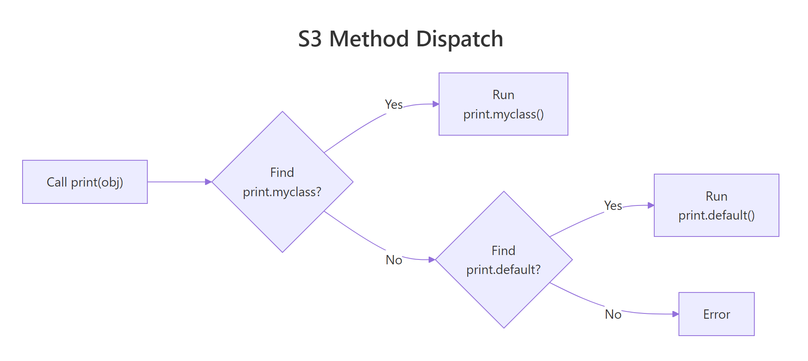
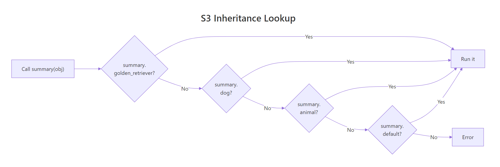
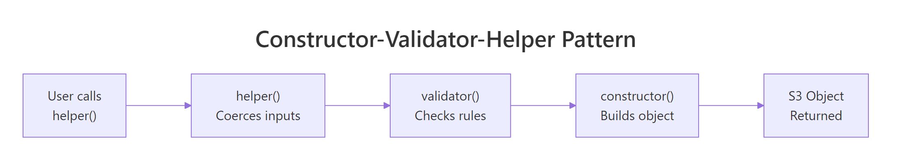

S3 Classes in R: Build a Custom Object System in Under 20 Lines of Code
S3 is R's original object system — the one that powers print(), summary(), and plot() on every object you touch. It has no formal class declarations, no schema, no boilerplate. You build a class by setting one attribute on a list, and you teach R new tricks by naming a function the right way.
What is S3 and how does it work?
Every time you call print() on a data frame and get a table, or call summary() on a linear model and get coefficients, S3 dispatch is running behind the scenes. Let's see that mechanism in action by building a custom class from scratch.
RInteractive R
# Create a plain list and turn it into an S3 object
my_pet <- list(name = "Rex", species = "dog", age = 5)
class(my_pet) <- "pet"
# Now R knows this is a "pet" object
class(my_pet)
#> [1] "pet"
# Check class membership
inherits(my_pet, "pet")
#> [1] TRUE
# Print it — R uses print.default() since we haven't defined print.pet() yet
my_pet
#> $name
#> [1] "Rex"
#>
#> $species
#> [1] "dog"
#>
#> $age
#> [1] 5
#>
#> attr(,"class")
#> [1] "pet"
That's the entire S3 class creation process. You made a list, stamped a class name on it with class(), and R now treats it differently. There's no class keyword, no define, no registration step. The class attributeis the class.
The inherits() function is the safest way to check whether an object belongs to a class. You'll see is.data.frame(), is.factor(), and similar functions throughout R — they all use inherits() under the hood.
Key Insight
S3 has no enforcement — the convention IS the system. R doesn't check whether your "pet" object actually contains a name or species field. Any list can be stamped with any class. This flexibility is S3's greatest strength and biggest risk, which is why constructors matter (covered in the next section).
Try it: Create a "book" S3 object with fields title = "R in Action", author = "Robert Kabacoff", and pages = 608. Assign the class "book" and verify it with class() and inherits().
RInteractive R
# Try it: create a "book" S3 object
ex_book <- list(
# your code here
)
# Test:
class(ex_book)
#> Expected: "book"
inherits(ex_book, "book")
#> Expected: TRUE
Explanation: You create a list with named elements, then set the class attribute. R now recognizes it as a "book" object.
How do you create an S3 class with a constructor?
Manually setting class() works, but it's fragile. What if someone forgets to include the species field, or passes a character string where a number should go? A constructor function wraps the creation logic so every object comes out consistent.
The convention is to name your constructor new_classname(). The structure() function is the cleanest way to build the object — it creates a list and sets the class attribute in one call.
RInteractive R
# Constructor function for the "pet" class
new_pet <- function(name, species, age) {
structure(
list(name = name, species = species, age = age),
class = "pet"
)
}
# Now every pet is built the same way
rex <- new_pet("Rex", "dog", 5)
bella <- new_pet("Bella", "cat", 3)
rex
#> $name
#> [1] "Rex"
#>
#> $species
#> [1] "dog"
#>
#> $age
#> [1] 5
#>
#> attr(,"class")
#> [1] "pet"
The constructor guarantees that every pet object has exactly three fields in the same order. Compare that to the raw approach where anyone can create a broken object.
Let's see what happens without a constructor — someone creates a "pet" with no species field, and everything looks fine until code downstream tries to use it.
RInteractive R
# Without a constructor, anything goes
bad_pet <- structure(list(name = "Ghost"), class = "pet")
# This "pet" has no species or age — a bug waiting to happen
bad_pet$species
#> NULL
bad_pet$age
#> NULL
The missing fields don't cause an immediate error — they silently return NULL. That's the kind of bug that surfaces three functions deep, far from where the mistake was made. Constructors prevent this by requiring all fields upfront.
Tip
Name constructors new_classname() by convention. This pattern (from Hadley Wickham's Advanced R) makes your code instantly recognizable to other R programmers. The new_ prefix signals "this is a low-level constructor — it assumes valid input."
Try it: Write a new_book() constructor that takes title, author, and pages arguments and returns a "book" S3 object. Test it by creating a book.
Explanation:structure() creates a list and assigns the class in one step — cleaner than setting class() separately.
How does S3 method dispatch find the right function?
When you call print(rex), R doesn't run a single universal print() function. Instead, it looks at the class of rex (which is "pet"), pastes together print.pet, and searches for a function with that exact name. If it finds one, it runs it. If not, it falls back to print.default().
This mechanism is called method dispatch, and UseMethod() is the engine that drives it. Let's define a custom print() and summary() for our pet class.
RInteractive R
# Custom print method — R will call this instead of print.default()
print.pet <- function(x, ...) {
cat(sprintf("== %s the %s ==\n", x$name, x$species))
cat(sprintf("Age: %d years\n", x$age))
invisible(x)
}
# Custom summary method
summary.pet <- function(object, ...) {
cat("Pet Summary\n")
cat(sprintf(" Name: %s\n", object$name))
cat(sprintf(" Species: %s\n", object$species))
cat(sprintf(" Age: %d (%s)\n", object$age,
if (object$age < 2) "young" else if (object$age < 8) "adult" else "senior"))
invisible(object)
}
# Now print() automatically uses our method
print(rex)
#> == Rex the dog ==
#> Age: 5 years
summary(rex)
#> Pet Summary
#> Name: Rex
#> Species: dog
#> Age: 5 (adult)
Notice the naming pattern: print.pet(), summary.pet(). The dot between the generic name and the class name is how R connects them. When you call print(rex), R sees that rex has class "pet", so it looks for print.pet() — and finds it.
You can discover all methods registered for a generic with methods().
R ships with hundreds of print.* methods — one for data frames, one for linear models, one for dates. Every time a package author defines a new class, they add their own print.classname(). That's why print() "just works" on everything.

Figure 1: How R dispatches a generic function call to the correct S3 method.
Warning
The dot in print.pet is not a namespace separator. It's tempting to think print.pet means "print inside the pet module," but the dot is just S3's dispatch convention. This is why you should avoid dots in class names — a class called my.pet would create a method named print.my.pet, and R might confuse it with a print.my method for a class called pet. Use underscores instead: my_pet.
Try it: Write a format.book() method that returns a formatted citation string like "Advanced R by Hadley Wickham (604 pages)". Then call format() on the book you created earlier.
RInteractive R
# Try it: write format.book()
format.book <- function(x, ...) {
# your code here — return a string with paste0()
}
# Test:
format(ex_my_book)
#> Expected: "Advanced R by Hadley Wickham (604 pages)"
Click to reveal solution
RInteractive R
format.book <- function(x, ...) {
paste0(x$title, " by ", x$author, " (", x$pages, " pages)")
}
format(ex_my_book)
#> [1] "Advanced R by Hadley Wickham (604 pages)"
Explanation:format() is an existing generic in base R. By defining format.book(), we teach R how to format book objects as strings.
How do you write your own generic function?
Most of the time, you'll add methods to existing generics like print(), summary(), and format(). But sometimes your domain needs its own verb — something like speak() for animals or deposit() for bank accounts. Creating a custom generic takes just one line.
A generic function is a function that calls UseMethod("name"). That's the entire definition. Then you write name.class() methods for each class that should respond to it.
RInteractive R
# Define a new generic function
speak <- function(x, ...) {
UseMethod("speak")
}
# Method for the "pet" class
speak.pet <- function(x, ...) {
cat(sprintf("%s says: *generic animal sound*\n", x$name))
}
# Default fallback for non-pet objects
speak.default <- function(x, ...) {
cat("This object can't speak.\n")
}
# Test it
speak(rex)
#> Rex says: *generic animal sound*
speak(42)
#> This object can't speak.
The generic speak() does nothing itself — it just calls UseMethod("speak"), which triggers dispatch. R looks at the class of x, finds speak.pet() for pet objects, and falls back to speak.default() for anything else.
The default method is your safety net. Without it, calling speak() on a non-pet object would throw an error. Whether you want that error or a graceful fallback depends on your design.
Note
You rarely need custom generics. The built-in generics — print(), summary(), format(), plot(), as.data.frame(), c(), [, + — cover most use cases. Before creating a new generic, check if an existing one fits. Custom generics make sense when you're modeling domain-specific actions (like deposit(), train(), or predict()).
Try it: Write a describe() generic function and a describe.book() method that prints the book's title and page count in a sentence. Test it on ex_my_book.
RInteractive R
# Try it: create a describe() generic + describe.book()
describe <- function(x, ...) {
# your code here
}
describe.book <- function(x, ...) {
# your code here — use cat() to print a sentence
}
# Test:
describe(ex_my_book)
#> Expected: "Advanced R is a 604-page book."
Click to reveal solution
RInteractive R
describe <- function(x, ...) {
UseMethod("describe")
}
describe.book <- function(x, ...) {
cat(sprintf("%s is a %d-page book.\n", x$title, x$pages))
}
describe(ex_my_book)
#> Advanced R is a 604-page book.
Explanation: The generic calls UseMethod("describe"), and R dispatches to describe.book() because ex_my_book has class "book".
How does S3 inheritance work?
S3 inheritance works through a simple mechanism: the class attribute can be a character vector instead of a single string. When R dispatches a method, it walks through the vector left-to-right, trying each class name until it finds a matching method.
To create a subclass, you prepend the subclass name to the parent's class vector. Let's make "dog" and "cat" subclasses of "pet".
RInteractive R
# Subclass constructors — prepend subclass to parent
new_dog <- function(name, age, breed) {
obj <- new_pet(name, species = "dog", age = age)
obj$breed <- breed
class(obj) <- c("dog", "pet")
obj
}
new_cat <- function(name, age, indoor) {
obj <- new_pet(name, species = "cat", age = age)
obj$indoor <- indoor
class(obj) <- c("cat", "pet")
obj
}
buddy <- new_dog("Buddy", 3, "Golden Retriever")
whiskers <- new_cat("Whiskers", 7, TRUE)
# Check the class vector
class(buddy)
#> [1] "dog" "pet"
# Buddy is both a dog AND a pet
inherits(buddy, "dog")
#> [1] TRUE
inherits(buddy, "pet")
#> [1] TRUE
Now comes the power of inheritance. If R can't find speak.dog(), it falls back to speak.pet(). Let's override speak() for dogs and cats while keeping the parent's print() available.
RInteractive R
# Override speak for dogs and cats
speak.dog <- function(x, ...) {
cat(sprintf("%s the %s says: Woof!\n", x$name, x$breed))
}
speak.cat <- function(x, ...) {
cat(sprintf("%s says: %s\n", x$name,
if (x$indoor) "Meow! (from the couch)" else "Meow! (from the fence)"))
}
# Each subclass has its own behavior
speak(buddy)
#> Buddy the Golden Retriever says: Woof!
speak(whiskers)
#> Whiskers says: Meow! (from the couch)
# But print() still falls back to print.pet() — no need to rewrite it
print(buddy)
#> == Buddy the dog ==
#> Age: 3 years
Notice the last line: print(buddy) calls print.pet() automatically. R tries print.dog() first (doesn't exist), then print.pet() (found it). That's inheritance — subclasses get parent methods for free.
Sometimes you want to extend the parent's behavior rather than replace it entirely. That's what NextMethod() does — it calls the next method in the class chain.
RInteractive R
# Extend print for dogs — add breed info, then delegate to print.pet()
print.dog <- function(x, ...) {
cat(sprintf("Breed: %s\n", x$breed))
NextMethod() # calls print.pet()
}
print(buddy)
#> Breed: Golden Retriever
#> == Buddy the dog ==
#> Age: 3 years
NextMethod() called print.pet() for us, so we didn't have to duplicate the base printing logic. This is S3's version of calling super() in other languages.

Figure 2: R walks the class vector left-to-right until it finds a matching method.
Key Insight
Inheritance in S3 is just the order of names in the class vector. There's no "extends" keyword, no formal parent link. c("dog", "pet") means "try dog methods first, then pet methods." You can even add or remove classes at runtime — the system is completely dynamic.
Try it: Create a new_textbook() constructor that builds a "textbook" subclass of "book". It should add an edition field. The class vector should be c("textbook", "book"). Test that format() still works (falling back to format.book()).
RInteractive R
# Try it: create a "textbook" subclass of "book"
new_textbook <- function(title, author, pages, edition) {
# your code here
}
# Test:
ex_stats_book <- new_textbook("ISLR", "James et al.", 607, 2)
class(ex_stats_book)
#> Expected: "textbook" "book"
format(ex_stats_book)
#> Expected: "ISLR by James et al. (607 pages)"
Explanation: The class vector c("textbook", "book") means R tries textbook methods first, then falls back to book methods. Since there's no format.textbook(), it uses format.book().
What are best practices for production S3 code?
For quick scripts, a bare constructor like new_pet() is enough. But if you're building a package or a system that other people will use, you need guardrails. The gold standard is the constructor-validator-helper pattern from Hadley Wickham's Advanced R.
Here's how the three layers work:
Constructor (new_pet) — builds the object. Assumes input is already correct. Fast, no checks.
Validator (validate_pet) — checks that the object's data makes sense. Called separately so you can skip it when performance matters.
Helper (pet) — the user-facing function. Coerces input types, calls the validator, then calls the constructor.
RInteractive R
# 1. Constructor — fast, no validation
new_pet <- function(name, species, age) {
structure(
list(name = name, species = species, age = age),
class = "pet"
)
}
# 2. Validator — enforces business rules
validate_pet <- function(x) {
if (!is.character(x$name) || nchar(x$name) == 0) {
stop("'name' must be a non-empty string", call. = FALSE)
}
if (!x$species %in% c("dog", "cat", "bird", "fish", "rabbit")) {
stop("'species' must be one of: dog, cat, bird, fish, rabbit", call. = FALSE)
}
if (!is.numeric(x$age) || x$age < 0) {
stop("'age' must be a non-negative number", call. = FALSE)
}
x
}
# 3. Helper — user-friendly, validates input
pet <- function(name, species, age) {
age <- as.numeric(age) # coerce "5" to 5
obj <- new_pet(name, species, age)
validate_pet(obj)
}
# The helper is what users call
my_dog <- pet("Max", "dog", 4)
print(my_dog)
#> == Max the dog ==
#> Age: 4 years
The validator catches mistakes early with clear error messages. Let's see it in action.
RInteractive R
# Validator catches bad species
try(pet("Ghost", "dragon", 100))
#> Error: 'species' must be one of: dog, cat, bird, fish, rabbit
# Validator catches negative age
try(pet("Rex", "dog", -3))
#> Error: 'age' must be a non-negative number
# Validator catches empty name
try(pet("", "cat", 2))
#> Error: 'name' must be a non-empty string
Each error message tells the user exactly what went wrong and what they should fix. Compare that to the silent NULL we got earlier when fields were missing — these errors are a feature, not a bug.

Figure 3: The constructor-validator-helper pattern for robust S3 classes.
Tip
Validate in the helper, not the constructor. The constructor assumes correct input so it stays fast — useful when you're creating thousands of objects internally. The helper is the public API where users pass messy input that needs checking.
Try it: Write a validate_book() function that checks pages > 0 and title is a non-empty string. It should return the object if valid, or stop() with a clear message if not.
RInteractive R
# Try it: write validate_book()
validate_book <- function(x) {
# your code here — check pages > 0 and title is non-empty
# stop() with a message if invalid, return x if valid
}
# Test:
try(validate_book(new_book("", "Author", 100)))
#> Expected: Error about empty title
try(validate_book(new_book("Title", "Author", -10)))
#> Expected: Error about non-positive pages
Click to reveal solution
RInteractive R
validate_book <- function(x) {
if (!is.character(x$title) || nchar(x$title) == 0) {
stop("'title' must be a non-empty string", call. = FALSE)
}
if (!is.numeric(x$pages) || x$pages <= 0) {
stop("'pages' must be a positive number", call. = FALSE)
}
x
}
try(validate_book(new_book("", "Author", 100)))
#> Error: 'title' must be a non-empty string
try(validate_book(new_book("Title", "Author", -10)))
#> Error: 'pages' must be a positive number
Explanation: The validator checks each field against its business rules and stops with a descriptive message on the first failure. Returning x at the end lets you chain calls: validate_book(new_book(...)).
Practice Exercises
Exercise 1: Build a bank account class
Create a "bank_account" S3 class with owner and balance fields. Write:
A new_bank_account() constructor
A deposit() generic and deposit.bank_account() method that adds to the balance and returns the updated account
A print.bank_account() method that shows owner and balance
RInteractive R
# Exercise 1: bank account class
# Hint: deposit() is a new generic — use UseMethod()
# The deposit method should modify the balance and return the object
Explanation:deposit() is a custom generic that uses UseMethod(). The method modifies the balance and returns the updated object so you can chain operations.
Exercise 2: Inheritance with savings account
Create a "savings_account" subclass of "bank_account" that:
Adds a min_balance field (default 100)
Overrides a new withdraw() generic to refuse withdrawals that would drop below min_balance
Uses NextMethod() in print.savings_account() to extend the parent's print
RInteractive R
# Exercise 2: savings account with minimum balance
# Hint: class vector should be c("savings_account", "bank_account")
# withdraw() needs a generic + method for bank_account + override for savings_account
Explanation:withdraw.savings_account() checks the minimum balance rule, then delegates to withdraw.bank_account() via NextMethod() if the withdrawal is allowed. print.savings_account() adds savings-specific info before calling the parent print.
Exercise 3: Convert pets to a data frame
Write an as.data.frame.pet() method that converts a single pet object into a one-row data frame. Then write a helper function pets_to_df() that takes a list of pets and combines them into a multi-row data frame.
RInteractive R
# Exercise 3: as.data.frame method for pet
# Hint: as.data.frame() is an existing generic — just write the .pet method
# Use do.call(rbind, ...) to combine multiple one-row data frames
Click to reveal solution
RInteractive R
as.data.frame.pet <- function(x, ...) {
data.frame(
name = x$name,
species = x$species,
age = x$age,
stringsAsFactors = FALSE
)
}
pets_to_df <- function(pet_list) {
do.call(rbind, lapply(pet_list, as.data.frame))
}
# Test with our existing pets
all_pets <- list(rex, bella, buddy, whiskers)
pets_df <- pets_to_df(all_pets)
print(pets_df)
#> name species age
#> 1 Rex dog 5
#> 2 Bella cat 3
#> 3 Buddy dog 3
#> 4 Whiskers cat 7
Explanation:as.data.frame() is a base R generic. By defining as.data.frame.pet(), any code that calls as.data.frame() on a pet — including tidyverse functions — works automatically. The helper pets_to_df() uses lapply() + do.call(rbind, ...) to stack multiple one-row frames.
Putting It All Together
Let's build a complete mini project management system from scratch — constructor, validator, helper, methods, a custom generic, and inheritance. This pulls together every S3 concept from the tutorial into one cohesive system.
RInteractive R
# === Task Management System ===
# Constructor
new_task <- function(title, status = "todo", priority = "medium", due = NULL) {
structure(
list(title = title, status = status, priority = priority, due = due),
class = "task"
)
}
# Validator
validate_task <- function(x) {
if (!is.character(x$title) || nchar(x$title) == 0)
stop("'title' must be a non-empty string", call. = FALSE)
if (!x$status %in% c("todo", "in_progress", "done"))
stop("'status' must be: todo, in_progress, or done", call. = FALSE)
if (!x$priority %in% c("low", "medium", "high", "critical"))
stop("'priority' must be: low, medium, high, or critical", call. = FALSE)
if (!is.null(x$due) && !inherits(x$due, "Date"))
stop("'due' must be a Date or NULL", call. = FALSE)
x
}
# Helper (user-facing)
task <- function(title, status = "todo", priority = "medium", due = NULL) {
if (is.character(due)) due <- as.Date(due)
obj <- new_task(title, status, priority, due)
validate_task(obj)
}
# Print method
print.task <- function(x, ...) {
icon <- switch(x$priority,
critical = "[!!!!]", high = "[!!!]",
medium = "[!!]", low = "[!]"
)
status_display <- toupper(gsub("_", " ", x$status))
cat(sprintf("%s %s (%s)", icon, x$title, status_display))
if (!is.null(x$due)) cat(sprintf(" | Due: %s", x$due))
cat("\n")
invisible(x)
}
Now let's add a custom generic and a subclass that uses everything we've learned.
# Create tasks
t1 <- task("Write S3 tutorial", "in_progress", "high", "2026-04-15")
t2 <- task("Review pull request", "todo", "medium")
t3 <- new_urgent_task("Fix production bug")
# Print them
t1
#> [!!!] Write S3 tutorial (IN PROGRESS) | Due: 2026-04-15
t2
#> [!!] Review pull request (TODO)
t3
#> >>> URGENT [!!!!] Fix production bug (TODO) | Due: 2026-04-13
# Summary
summary(t1)
#> Task Summary
#> Title: Write S3 tutorial
#> Status: in_progress
#> Priority: high
#> Due: 2026-04-15
# Check overdue status
is_overdue(t1)
#> [1] FALSE
# Validation catches mistakes
try(task("", priority = "ultra"))
#> Error: 'title' must be a non-empty string
This entire system — three classes, five methods, one custom generic, inheritance with NextMethod(), and input validation — uses nothing beyond base R. No package imports, no registration, no boilerplate. That's the power of S3.
Summary
Concept
How It Works
Key Function
Create a class
Set class attribute on a list
class(x) <- "name" or structure()
Constructor
Function that builds consistent objects
new_classname() convention
Method dispatch
R looks for generic.class(), falls back to generic.default()
UseMethod()
Custom generic
Function that calls UseMethod("name")
UseMethod()
Inheritance
Class is a character vector; R walks left-to-right
S3 is intentionally minimal. It gives you just enough structure to build polymorphic systems without the ceremony of formal OOP. Most of R's ecosystem — including the tidyverse — is built on top of it. When you need more guardrails (formal slots, multiple dispatch, mutable state), look at S4 or R6. But for the vast majority of R programming, S3 is all you need.
References
Wickham, H. — Advanced R, 2nd Edition. Chapter 13: S3. Link
R Core Team — R Language Definition, Section 5: Object-Oriented Programming. Link
Chambers, J.M. — Software for Data Analysis: Programming with R. Springer (2008).